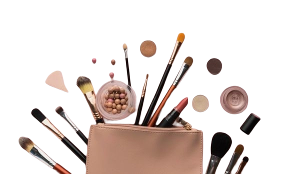
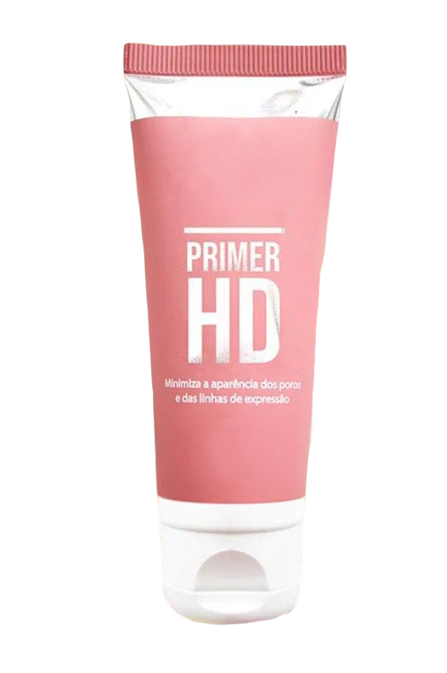
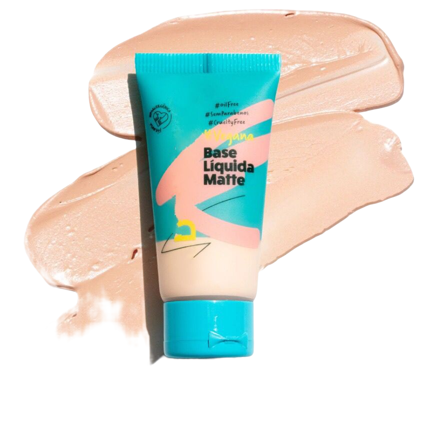
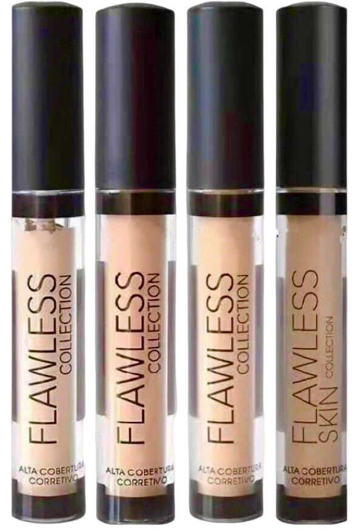
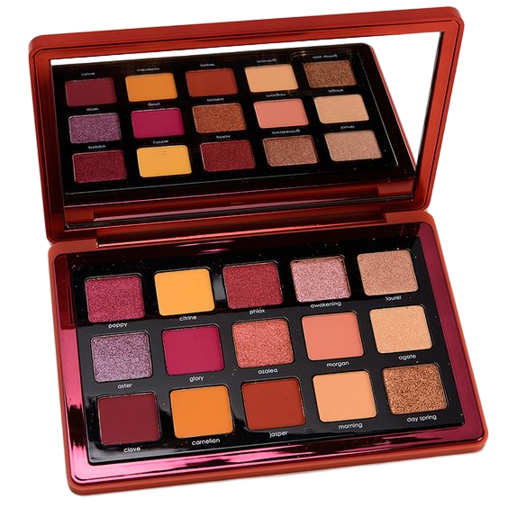
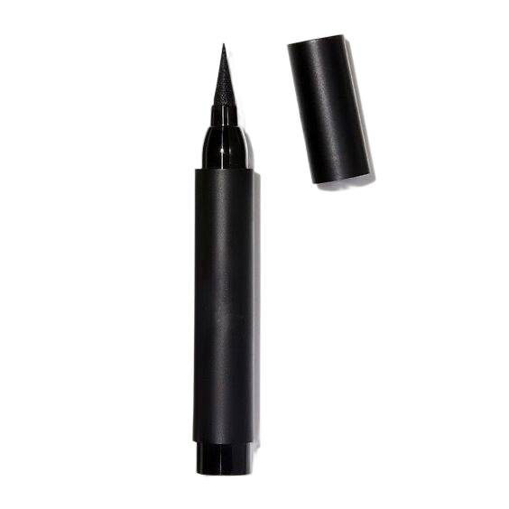

15 itens que não podem faltar em sua nécessarie para fazer uma maquiagem
Muitas vezes, em meio a tantas opções de make e de todas as novidades do mercado de beleza,
ficamos indecisas na hora de fazer nosso checklist
de itens de maquiagem essenciais para se maquiar em casa.

Vamos lá?
1 - Pincéis de maquiagem

OS pincéis são os grandes alidos da nossa make para todas as ocasiões.
E a lista é grande, pois cada um tem uma função na maquiagem. É claro que
você não precisa correr para comprar todos, mas é legal investir em bons princéis
e ter pelo menos alguns deles para transformar sua maquiagem todos os dias. Abaixo,
te mostrarei os principais deles, que podem ser comprados avulsos ou até em estojos completos:
▸ Pincel língua de gato, kabuki ou duo fiber para a base
▸ Esponja de maquiagem para o acabamento
▸ Pincel para blush
▸ Pincel para corretivo
▸ Pincel para sombra
▸ Pincel para pó compacto
▸ Pincel para os lábios
▸ Pincel chanfrado para delinear os olhos e corrigir a sobrancelha
2 - Primer Facial

Quando vamos à uma loja de maquiagem profissional, há tantas variações de produtos
com tantas funções que podemos acabar nos dedicando às compras de sombras, batons e
pincéis e nos esquecendo de itens fundamentais para o acabamento da maquiagem.
É o caso do primer, que deve ser aplicado para preparar a pele para receber a make. Esse produto é muito
importante porque deixa a pele uniforme, ajuda a disfarçar os poros e faz com que a maquiagem dure mais
tempo. Além disso, ele é indicado para todos os tipos de pele, assim, é essencial em qualquer
nécessarie.
3 - Base

Quando pensamos em make profissional, uma das principais características é uma maquiagem de alta
cobertura, com uma pele impecável e bem corrigida. E o produto diretamente responsável por tudo isso é a
base, por isso, é um investimento fundamental para uma maquiagem de ótimo acabamento.
Além de acertar o tom da base, há produtos com diferentes texturas e acabamentos para atender a variados
tipos de pele. Sendo assim, é essencial pesquisar e investir sem medo nas melhores marcas de maquiagem,
que contam com as bases mais utilizadas pelos maquiadores profissionais.
Aqui, estamos falando sobre a automaquiagem, mas nada impede que você invista em uma variedade de tons
para, quem sabe, começar seus negócios de maquiagem e atender às demandas das suas clientes.
4 - Corretivo

Uma lista de produtos de maquiagem não é totalmente completa sem um bom corretivo. Esse produto
complementa a cobertura da base e ajuda a corrigir imperfeições mais difíceis de serem cobertas, como
acne, olheiras muito profundas, rosácea, melasmas, entre outros. ( Temos um post só sobre corretivos
coloridos e como usá-los adequadamente). Você pode escolher um tom específico de
corretivo para o seu objetivo ou contar com uma paleta para estar preparada para tudo.
5 - Paleta de sombras

Grande parte do que se fala sobre “se divertir ao fazer uma maquiagem" está na escolha de uma ou mais
cores de sombras para aplicar na região dos olhos. Desde makes mais naturais, com tons terrosos e que
trazem efeitos sutis ao olhar, até as combinações mais coloridas e divertidas, passando pelos tons
elegantes e sofisticados para festas de gala, com uma boa paleta de sombras, as possibilidades se
multiplicam.
Você pode comprar sombras em separado para aprender como se maquiar, e se realmente gostar muito de uma
determinada cor, mas para testar diferentes estilos e aprimorar suas técnicas, a dica é investir em uma
ou várias paletas de sombras.
6 - Delineador

Seja para testar o famoso “delineado gatinho” ou para ousar nos traços, brincando inclusive com
diferentes cores, o delineador é um item que promete não sair tão cedo da lista de itens essenciais de
maquiagem. Esse produto ajuda a levantar o olhar, deixando-o muito marcante e cheio de personalidade.
Além disso, o delineador é aquele item que pode parecer super difícil de usar, mas resulta facilmente
em uma maquiagem muito mais interessante. Por tudo isso, esse produto se tornou muito cobiçado pelos
amantes de make, e há vários tutoriais sobre delineados diferentes na internet.
6 - Lápis para olhos

Ainda no que diz respeito a realçar o olhar, o lápis para olhos é daqueles curingas, que ajudam a criar
os mais diferentes acabamentos na maquiagem. Desde o clássico traçado preto na linha d’água até os tons
terrosos para corrigir as sobrancelhas, passando por aqueles estilo kajal que traçam um delineado
dramático, mas ao mesmo tempo suave, o lápis para olhos deve ser incluído na sua lista de maquiagem
profissional em casa.